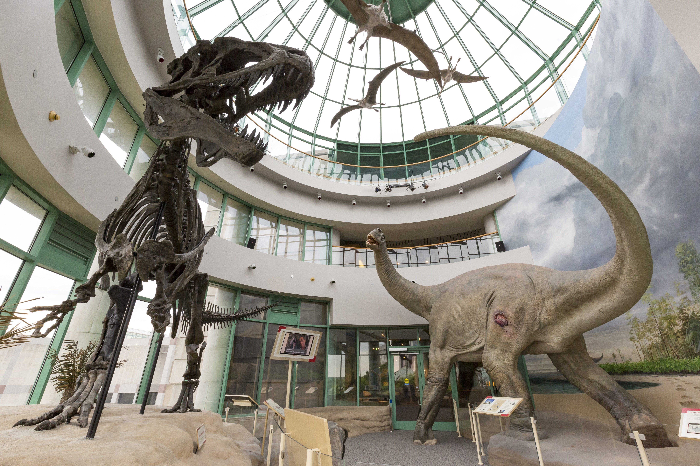

Home Page
Favorite City
My Favorite City
My favorite city is Raleigh. I like you can do so many things like museums, parks, the lego store, and the mall.
Another Paragraph
Things to do in Raliegh
Here's a list of things to do in Raliegh:
Pictures

- Visit the North Carolina Museum of Natural Sciences!
- Check Out the Capital Building and park!
- Visit the Lego store!
Some Links
Visit Raleigh